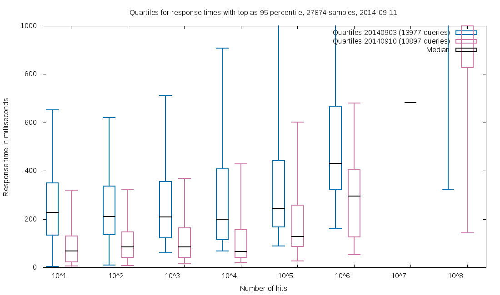
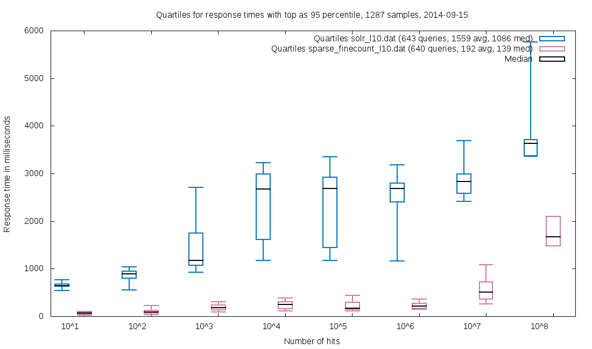

Sparse faceting for Solr
This project is for the SOLR-5894 patch.
Elevator pitch
Sparse faceting speeds up the majority of Solr searches that uses faceting on large (1.000.000+ unique terms) text fields, such as author or title. The speed-up is extremely dependent on the setup, but expect at least a factor 2 for single-shard indexes and more for multi-shard.
Download and usage
Download a sparse WAR and use it instead of the standard Solr WAR. No tweaks are needed to solrconfig.xml.
Sample calls
-
http://localhost:8983/solr/collection1/select?wt=xml&q=myquery&facet.field=mytextfield
A standard faceting call, which should trigger sparse faceting if the number of unique values is 10.000+ in mytextfield. Note thatfacet.methodmust befcfor sparse to work. However, Solr usesfcper default for large text fields, so there is probably no need to state it explicitly. -
http://localhost:8983/solr/collection1/select?wt=xml&q=myquery&facet.field=mytextfield&facet.sparse=false
When sparse faceting is disabled, faceting is handled by the standard Solr faceting implementation. Useful for checking correctness and performance differences. -
http://localhost:8983/solr/collection1/select?wt=xml&q=myquery&facet.field=mytextfield&facet.sparse.stats=true
Sparse faceting provides a bunch of statistics when asked. Also very useful to determine if sparse is activated at all. -
http://localhost:8983/solr/collection1/select?wt=xml&q=myquery&facet.field=mytextfield&facet.sparse.skiprefinements=true
In a multi-shard setup this speeds up faceting at the cost of precision, by skipping the fine-counting of facets. The reported counts will be <= the true counts. Use it if response time is paramount. -
http://localhost:8983/solr/collection1/select?wt=xml&q=myquery&facet.field=mytextfield&facet.sparse.maxtracked=255
Maxtracked sets an upper limit for the counts in the facets in the shards (the total count in a distributed setting might be higher). This might speed things up a bit (the values 15, 255 & 65535 are good for this) and lowers the memory requirement for faceting. Use it if memory usage is paramount.
See SparseKeys.java for a detailed description of the knobs to tweak.
How well does this work?
When we enabled sparse faceting for our core index (50GB / 14M docs / 2 large, 6 small facets) at the State and University Library, Denmark, we observed that our response times during work hours were halved, compared to 7 days earlier:

For the Danish Web Archive (12TB / 4B docs / 1 massive, 3 large, 2 small facets), response times dropped to less than 1/5 when using sparse faceting:

See the links at the bottom for full reports on our observations.
Is this reliable?
We use it in production at State and University Library, Denmark with millions of unique values in the facets and at the Danish Web Archive with billions of unique values in one of the facets. The patch does not change the index in any way, so the worst thing that can happen is that one needs to switch back to standard Solr.
The sparse family
Over time Sparse faceting has been extended to provide multiple improvements over vanilla Solr.
1. Counter allocation and Garbage Collection
Both Standard Solr fc String faceting and sparse faceting uses counter structures, with 1 counter per unique value in the facet. Solr allocates one counter structure for each call and releases it to the heap after use. Such allocation takes time (think 1ms for each 1M unique facet values) and requires clean-up from the garbage collector.
Sparse faceting maintains a pool of counters and clears them using a background thread, meaning instant counter "allocation" and deallocation with no taxing of the garbage collector. The time for cleaning a counter is proportional to the amount of updated values it contains, but even worst-case is faster that the allocate-release cycle of standard Solr.
The pool of counters for sparse faceting is adjustable and can be turned off completely. The relevant parameter is sparse.sparse.pool.size.
2. Counter packing
Standard Solr uses an integer array to hold the counters, one for each term in the facet field. This requires 32 bits / unique facet value, for each concurrent call that is running.
Sparse faceting provides multiple structures for holding the counters. If no explicit argument is given, it will auto-select either array or packed, depending on field layout.
facet.sparse.counter=arrayuses an integer array, just like vanilla Solr. This works well for facets with hundreds of thousands of unique values or less.facet.sparse.counter=packed: Sparse faceting calculates the maximum possible value for any counter in the structure and uses PackedInts to hold the values. If the highest count for a facet term with the search*:*is 5000, only 13 bits will be used for each counter as2^13 = 8192, which is enough to count to 5000. Depending on corpus this can be a huge memory saver. Packed works well with millions of unique values and upwards, provided that the highest count is in the lower millions or less.facet.sparse.counter=nplanezperforms an exhaustive analysis of the facet field and creates a compact counter structure. This works well for fields where the maxima distribution is long tail with a few counters having very large (millions) maxima and the majority having very low maxima (<4). Due to the computational overhead of nplane, it is generally only recommended for fields with tens or hundreds of millions of values, where heap overhead is a premium. See N-plane packed counters for faceting for details.
3. Sparse counting
Standard Solr fc String faceting maintains an array of counters for all possible values in the facet. The counters are incremented based on the document IDs from the search and all counters are iterated to extract top-X, including the ones that have not been touched.
Sparse faceting keeps track of which counters are incremented, so only those are iterated. For small result sets and fields with many unique values, the time-saving is substantial. Empirical measurements puts "small result sets" around 8% or less of the total size and suggests that most user-issued searches are below this. For very small result sets, sparse faceting becomes practically free.
4. Faster distributed faceting
Distributed faceting on a multi-shard Solr setup require fine-counting for some of the terms. Standard Solr handles this with a mini-search for each term. Worst-case is when practically all shards needs to fine-count a term: If the facet.limit is 100, the number of mini-searches for each shard will be 100 * 1.5 + 10 = 160 (See the FacetComponent for details). Unfortunately this worst case is not rare. Andy Jackson from British Library called this Performance Pit of Pain.
Sparse faceting re-creates the full counter structures from the initial facet count, then iterates the fine-counting terms and locates their position in the counter structure, extracting the value directly. Although the full counter re-creation sounds costly, it is normally cheaper than the many mini-searches.
For further speed-up, the counters from the initial facet count are cached. This reduces the fine-counting step to the locating of term positions. This cache is controlled with facet.sparse.cache.distributed.
If precise counting is not essential, the fine-counting step can be disabled with facet.sparse.skiprefinements=true. Disabling this makes distributed faceting perform at practically the same speed as non-distributed.
For a more in-depth description, see http://sbdevel.wordpress.com/2014/10/02/what-is-high-cardinality-anyway/
5. Threaded facet counting
facet.sparse.counting.threads=X is an experimental feature that use multi-threading to update the counter structures. This speeds up faceting for large result sets, where the number of references from documents to terms is in the tens of millions or more. This only works with facet.sparse.counter=packed and facet.sparse.counter=nplanez.
6. Regexp based blacklists and whitelists
It is possible to filter the facet result based on regular expressions, using either facet.sparse.whitelist or facet.sparse.whitelist. If the user wants only the terms that starts with foo and does not contain any digits, the arguments would be facet.sparse.whitelist=^foo.*&facet.sparse.blacklist=.*[0-9]+.*. For details, read Facet filtering.
Limitations
Sparse faceting will not help with single-shard searches with large result sets (> 8% of index size). Fortunately it does not hurt either as it falls back to the Solr standard way of counting: There are a lot of knobs to tune this, but the default are chosen conservatively, so the chance of having worse-than-standard response times should be quite low.
For multi-shard searches, sparse faceting should be faster for most setups and result set sizes, due to the more efficient fine-counting method.
Currently only facet.method=fc for Strings is supported; for single- and multi-value. In theory the sparse principle can be applied to facet.method=fcs, although the gains will probably be somewhat smaller, at least for single shard setups. This sub-project has not been started yet. See issue #8 for details.
NOTE: Full sparse feature support only for DocValue-fields! There is partial support for non-DV in the 4.8 branch (no nplanez counter, no blacklists and whitelists)), and no support in the 4.10-branch (due to an elusive bug).
Why is this not in standard Solr?
Basically because it needs a Solr committer to accept the patch. Visit SOLR-5894 and vote for it, if you want to encourage this.
It is not just a question of the committer pressing accept though. The patch needs to be tested independently and the committer should have some experience with the Solr faceting code, in order to ensure that SOLR-5894 plays nice with the rest of the code base.
Nitty gritty
Sparseness it not related to document count per se. It is all about the facet values.
Imagine an index with 40M documents and an author field. There are 10M unique authors and each document has 0-4 authors. Most searches hits 1,000 - 1,000,000 documents. This is a prime candidate for sparse faceting as most searches will result in less than 8% (3,200,000) of all unique names in the author facet being part of the search result. Nearly all searches will be processed as sparse. If all goes well, this will increase withinCutoff in the stats feedback.
100 authors are extremely popular and are each referenced by 100,000 documents. This is not a problem as it has little influence on the number of unique authors in the search result. See the tag-example below for the reverse case.
The index has a subject field with 100,000 unique values. Each document has 1-10 subjects. For this field, chances are a lot higher than a search will result in more than 8% (800) of the unique subjects being part of the search result. Only searches with very low hit count will be processed as sparse. This is not too problematic if sparse faceting guesses right and uses non-sparse counting got the searches that are estimated to exceed the 8% limit: In that case speed will be equivalent with standard Solr. This up front disabling of sparseness is counted in the disables in the stats feedback.
The index has a tag field with 100,000 unique values. Most documents have 1-10 tags, but every 1,000 document has 10,000 tags (the auto-tagger ran amok). It only takes a single amok-document to blow the sparse limit of 8% of the unique tags, so chances are high that it will be blown and that the sparseness guesser will estimate that it will not. This combination results in wasted work in the collector, so the sparse faceting will be worse than standard Solr. In the stats feedback, exceededCutoff is the number of times this has happened.
More reading and tests
- Terabyte index, search and faceting with Solr
- Ten times faster
- Even sparse faceting is limited
- Small scale sparse faceting
Who made this?
Sparse faceting is the work of Toke Eskildsen. Most of the code was implemented on company time at the State and University Library, Denmark. It was fueled partly by the need for snappy responses from the Danish Web Archive, partly because the gains are just too awesome to let pass. Many thanks to the State and University Library for supporting Open Source by allocating the time needed to make such things public.
Feel free to contact Toke Eskildsen, te@statsbiblioteket.dk, @TokeEskildsen